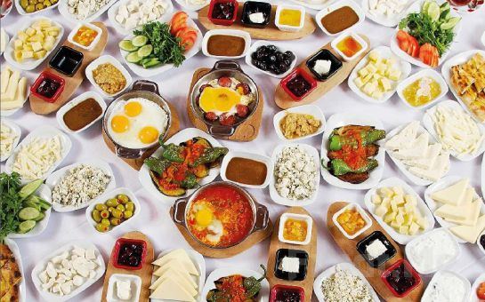
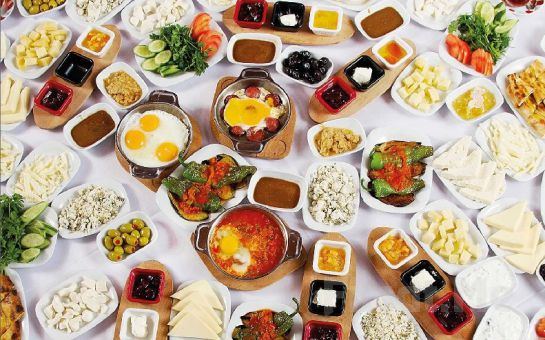

Kahvaltı Menüsü
Kahvaltıda değişik ne yapabilirim diyenlere en iyi kahvaltı menüleri; vakti az olanlara kolay kahvaltılık menü
tariflerinde!
Devamını gör

Köy Kahvaltısı Tadında (Serpme Kahvaltı)
Kahvaltıda değişik ne yapabilirim diyenlere en iyi kahvaltı menüleri; vakti az olanlara kolay kahvaltılık menü
tariflerinde!
Devamını gör

Köy Kahvaltısı Tadında (Serpme Kahvaltı)
Öğlen yemeğe ne pişirsem diye düşünenlere pratik öğlen yemeği menüleri; doyurucu ve farklı fikirler sunan tarifleri sizler için derledik.
Akşam yemeği menüleri, misafir için pratik ve en iyi tarifler; aileler için kolay ve lezzetli akşam yemeği önerileri sayfamızda
Evinizde aileniz ve sevdikleriniz için kutlama planlıyorsanız doğum günü menüsü ve tarifleri tam size göre! Pastaneden hazır alınmış gibi şık sunumlu doğum günü pastaları; atıştırmalık tuzlu ve tatlı kurabiyeler; poğaça, börek ve çörekler; yaprak sarma, dolma ve salatalar ile birbirinden leziz doğum günü menüleri tek tıkla mutfağınızda.
İftara ne pişirsem telaşına son veren en seçkin iftar menüleri Nefis Yemek Tarifleri lezzet ayrıcalığıyla huzurlarınızda! 11 ayın sultanına yakışır iftar menüleri yepyeni tarifleri ramazan sofralarınızı taçlandıracak değişik tatlar sunuyoruz.